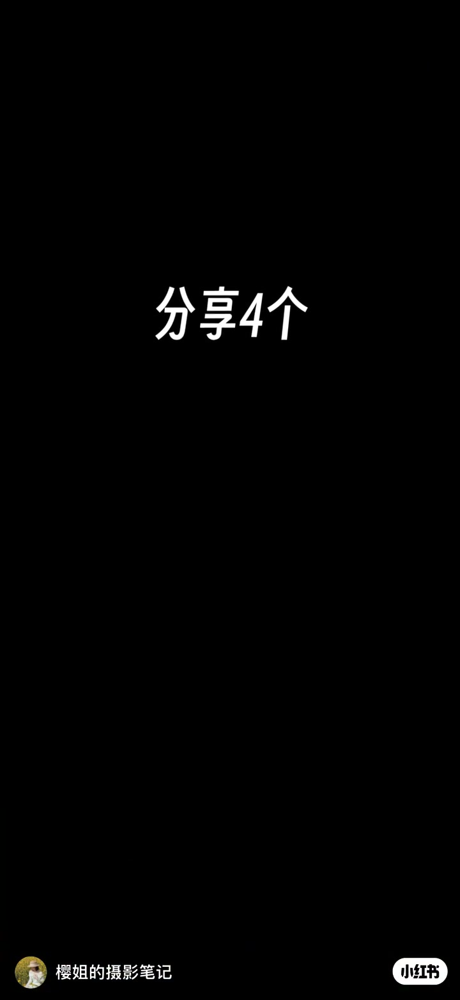
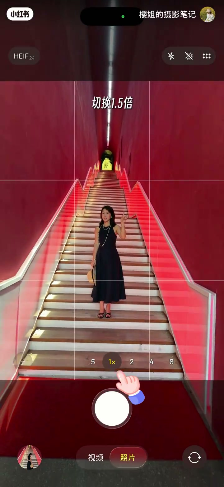
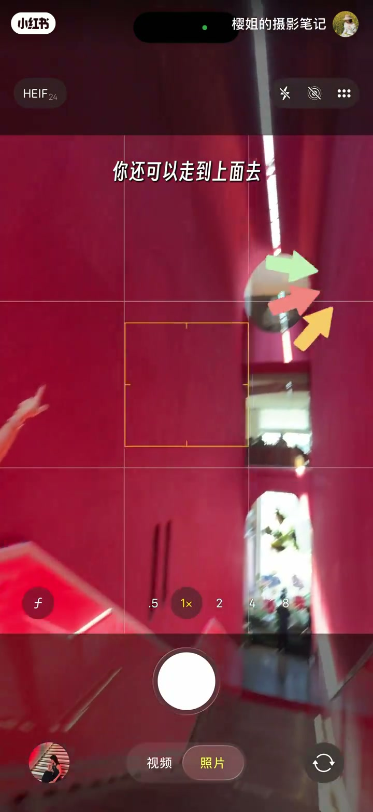
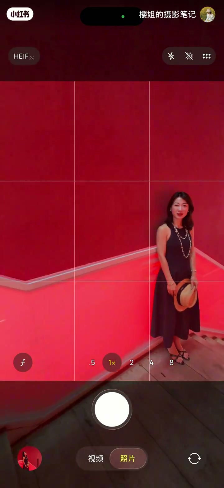
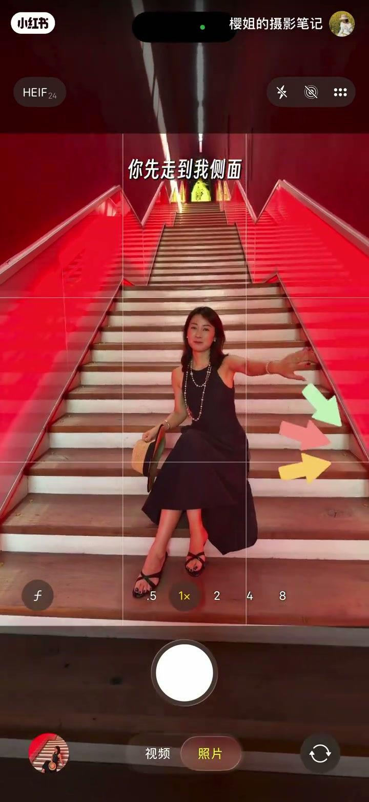

内容要点
一支 39 秒的楼梯拍照教学，分享四个让氛围感拉满的机位技巧：①手机抬高 + 后退两步 + 1.5 倍，拍出楼梯的纵深感，人物放中下两格；②走到楼梯上面放大两倍俯拍裙摆，更有意境；③侧前方机位降低、两倍放大、人物站三分线；④侧面抬高手机两倍、手往后撑，三角形构图。每个技巧都配有「翻车 vs 出片」的对比示范。
知识结构
手机抬高、后退两步、切换 1.5 倍，拍出楼梯的纵深感，人物放在画面中下两格。
走到楼梯上面放大两倍俯拍裙摆更有意境；侧前方机位降低、两倍放大、人物站三分线直接出片。
侧面抬高手机、切换两倍、手往后撑，三角形构图拍一张，避免正面平拍显腿短。
楼梯氛围感拍照 = 抬高机位拍纵深 + 俯拍裙摆 + 三分线构图 + 侧面三角形构图。同一个楼梯，换四个机位角度，就是四种氛围。
00:00-00:03开场：蹲下直拍的翻车示范
视频用一句俏皮话开场：「当朋友蹲下的时候，就知道要翻车了。」低机位平拍的常见误区被一句话点破，随后进入正题——分享四个楼梯拍照小技巧。

00:04-00:12技巧一：抬高手机，拍出纵深感
第一个技巧包含三个口令：「你先把手机抬高，再后退两步，切换 1.5 倍」，目标效果是「拍出楼梯的纵深感」。
构图位置也给出了明确答案：人物「放在中下两格就可以拍了」——利用楼梯的线条斜向延伸，把纵深感拍出来，是楼梯场景最基础也最出片的一招。

00:13-00:29技巧二、三：俯拍裙摆与三分线
第二个技巧利用楼梯的高度差：「你还可以走到上面去，放大两倍，用俯拍视角拍我站动裙摆，更有意境。」从上往下俯拍，裙摆随动作自然摆动，画面更有故事感；对比之下，平拍的「太像证件照了」。
第三个技巧是侧前方低机位：「你先走到我侧前方，机位降低一点，放大两倍，人物站三分线，出片。」机位降低 + 三分线构图，人物比例修长、背景纵深兼具，是三个技巧里最万能的。


00:29-00:39技巧四：侧面抬高，三角形构图
最后一个技巧针对「显腿短」的痛点：「你先走到我侧面，再把手机抬高一点，切换两倍，手往后撑，三角形构图拍一张。」
侧面站位避免正面压缩身高，抬高机位修正腿部比例，手往后撑的动作让上半身与楼梯线形成三角形结构——角度、比例、结构三个维度一次到位。

完整转录（26段）
以下文本由 Whisper medium 模型自动转录，可能存在少量识别误差，已尽可能修正。
当朋友蹲下的时候
就知道要翻车了
分享四个
楼梯拍照小技巧
你先把手机抬高
再后退两步
切换1.5倍
拍出楼梯的纵深感
把我放在中下两格就可以拍了
你还可以走到上面去
放大两倍
用斧拍戏角
拍我站动裙摆
更有意境
这样拍太像正剑照了
你先走到我侧前方
机位降低一点
放大两倍
人物站三分线
出片
这样拍闲腿短
你先走到我侧面
再把手机抬高一点
切换两倍
手往后撑
三角形构图拍一张